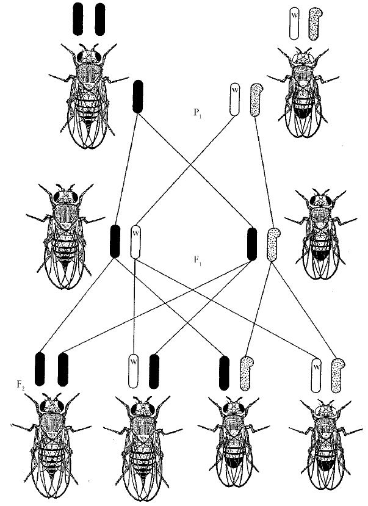
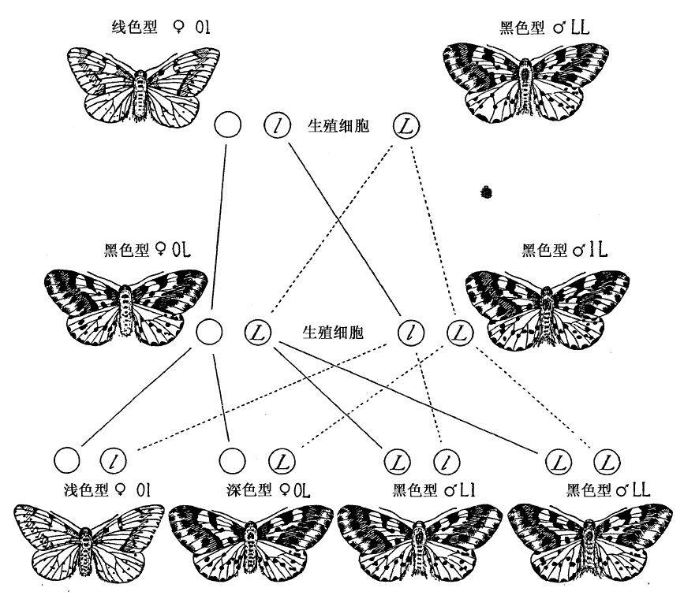
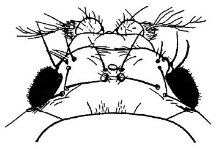
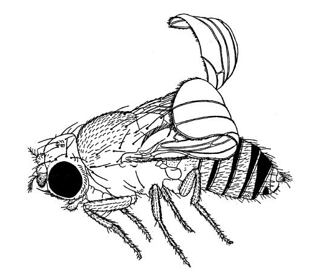
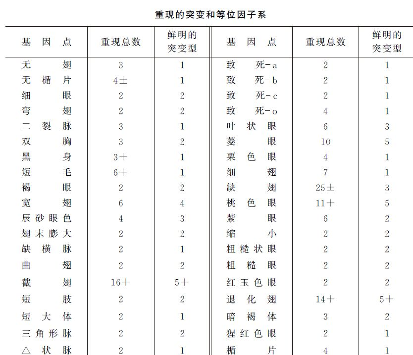
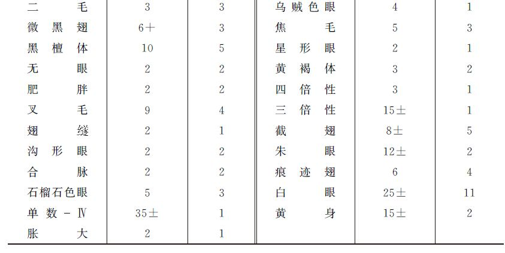
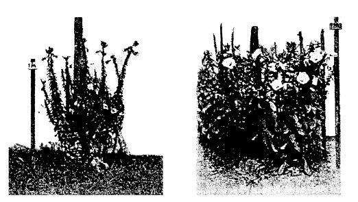
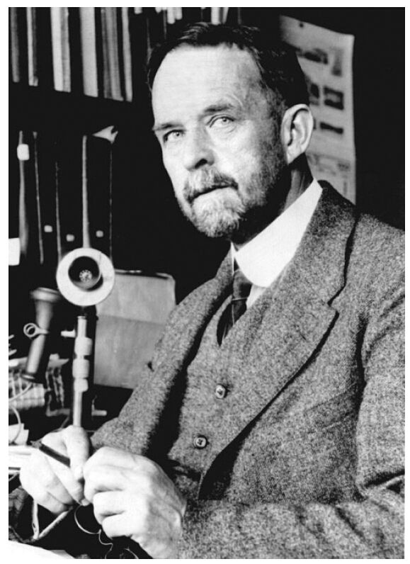

第5章 突变性状的起源
进化一定要通过基因上的变化，才能进行。但是这不是说，这些进化性变化和我们所看到的由突变而来的变化是同一个东西。很可能野生型基因自有其不同的起源。事实上，人们默认这项观点，有时还热烈地主张过它。因此，要找出究竟有没有证据支持这一观点，是有重大意义的。
哥伦比亚大学Butler图书馆。1904—1927年，摩尔根在此校任教并创建了著名的“蝇室”。
现代遗传研究，已经同新性状的起源，密切联系起来。事实上，只是在有成对的相对性状能被追踪的时候，才可能研究孟德尔式遗传。孟德尔在他所采用的商品豌豆里找到了高和矮、黄和绿、圆和皱这一类的相对性状。以后的研究也广泛地采用了这种材料，但有些最好的材料，却是谱系培养中起源比较确定的新型性状。
这些新性状大都突然发生，完整无缺，并且像它的原型性状一样的恒定。例如果蝇的白眼突变体，在培养中出现时，只有一只雄蝇。该蝇同普通红眼雌蝇交尾，子代全为红眼（图38）。子代自交，下一代有红眼和白眼两种个体。所有的白眼个体都是雄蝇。

图38 黑腹果蝇白眼的性连锁遗传。白眼雄蝇同红眼雌蝇交配。载有红眼基因的X染色体，用黑棒代表；载有白眼基因的X染色体，用白棒代表；染色体上的白眼基因则用白字代表；Y染色体上着细点
孙代白眼雄蝇，与同一世代里的红眼雌蝇交配，其中有些产生同样数目的白眼果蝇和红眼果蝇，每种雌雄各半。这些白眼果蝇自交，便产生纯粹的白眼原种。
我们按照孟德尔第一定律解释以上实验结果，假设生殖质内有产生红眼和产生白眼的两种要素（或基因）。两者表现了一对相对要素的行动，在杂种的卵子和精子成熟时互相分离。
必须注意，这项学说并不认为白眼基因单独产生白眼。它仅仅是说由于这一个变化，于是整个物质才产生了一种不同的最后产物。事实上，这项变化不仅影响了蝇眼，而且也同样影响了身体上其他部分。红眼果蝇的精巢膜原带绿色，在白眼果蝇里则变为无色。白眼果蝇比红眼果蝇行动迟钝，寿命较短。生殖质内某一部分发生了变化，身体上的许多部分也大半会受到影响。
在自然界中出现的浅色或白色的Abraxas蛾，一般属于雌性。浅色突变型雌蛾同黑色野生型雄蛾交配（图39）其子代与黑色型相同。

图39 示Abraxas浅色型（lacticolor）同普通黑色型（grossulariata）的杂交。有L的圆圈，表示载有黑色基因的性染色体；有l的圆圈，表示载有浅色基因的染色体；无字的圆圈，表示雌蛾所独有的W-染色体

图40 黑腹果蝇的突变性状Lobe 2 眼。眼小而突出
以上两种突变性状，对野生型的相应性状呈隐性作用，但也有其他突变性状呈显性作用的。例如Lobe 2 眼的特征，在于眼的特殊形状和大小（图40）。原来只出现了一只果蝇。其子代的一半，显出同样的性状。在突变型的父体或母体内，有一条第二染色体上的一个基因一定发生了变化。含有这个基因的生殖细胞，在受精中，同含有正常基因的生殖细胞会合，于是发生了第一个突变体。因此，第一个个体是一个杂种或杂合子，并且如上所述，在同正常果蝇交配时，产生Lobe 2 眼和正常眼两种后代，为数各半。这些杂合的Lobe 2 眼果蝇交配，得出纯粹的Lobe 2 眼果蝇。纯种（纯合的Lobe 2 眼）同杂合型相似，不过往往眼小一些，可能缺少一只或两只眼。
奇怪的是许多显性突变体在纯合的状态时是致命的。例如显性性状卷翅（图41）在纯合状态时几乎总是死去。但偶尔有一只存活的。鼷鼠的黄毛突变体作为双重显性时，是致命的，鼷鼠的黑眼白毛突变基因也是如此。所有这种类型都不能育成纯粹的原种（除非用另一个致死基因同这个显性“平衡”）。它们所产生的每一代个体，都是一半像它们自己，一半属于另一类型（正常等位基因）。

图41 黑腹果蝇的突变性状：卷翅（翅的末端上卷）
人们的短指型是一种突出的显性性状，大家都知道它的遗传情况。不容怀疑，短指型作为一个显性突变体出现，并在某些家族里固定下去。
所有果蝇的原种都是作为突变体出现的。在我们列举的例子里，突变体初次出现时都是一个个体，但在其他例子里，也有几个新突变型同时出现。这种突变一定是在种系中很早便发生了，因而有几个卵子或几个精细胞带有这个突变了的要素。
有时，一对果蝇的子代里有四分之一为突变体。这些突变体都是隐性，而且根据证据，这种突变早已在某一祖先体内发生了，但因为是隐性，所以如果不是含有该突变基因的两个体会合，便不能显露出来。这样，它们的子代中预计应有四分之一表现隐性性状。
近亲繁殖纯种比较远亲繁殖纯种更应该产生这种结果。如果是远亲繁殖，则在这样的两个体偶然会合以前，这个隐性基因也许已经分布到很多个体当中去了。
人们有某些缺陷性状，其重现次数比根据突变独立发生所应有的为多，很可能是人们的生殖质内隐藏着许多隐性基因。追查一下他们的家谱，往往发现他们有些亲戚或祖先，具有同样的突变性状。白化人也许是这类例子中最好的一个。许多白化人都是由含有这个隐性基因的两个纯种产生的，但新的白化基因也往往可能是由突变产生的。即使如此，除非与另一相同的基因会合，否则新基因仍然不能表现出来。
大多数驯化的动物和植物都有许多性状，同起源业经确定的突变性状一样地遗传下去。毫无疑问，这些性状，尤其是在从近亲繁殖而来的驯化类型中，有许多是由骤然的突变发生的。
我们不应该从上述例证断定：只有驯化品种才能产生突变体，因为事实并不是如此。我们有充分证据证明：在大自然中，也发生诸如此类的突变。但由于大多数突变体比野生型衰弱或者适应较差，所以在被认出之前便消灭了。相反，在培养条件下，保护周密，弱型却有机会生存下来。其次，驯化生物，特别是供遗传研究的生物，经过了严密的检查，又是我们所熟悉的，所以能发现许多新型。
从果蝇原种中发生突变的研究，揭露了一件奇怪的意外事实。突变仅仅发生在一对基因中的一个基因里，而不是同时发生在两个基因里。究竟是什么环境的影响能够引起一个细胞内某一基因的变化，而不引起另一个相同基因的变化，这是难于想象的。因此，变化的原因，似乎是内在的，而不是外在的。关于这个问题，以后还会进一步讨论。
另一事实也由于研究突变作用而引起了注意。同一种突变可以一再发生。下表表示在果蝇中反复出现的突变。同一突变体一再出现，足见我们所看到的是一个特殊的井然有序的过程。突变重复出现一事使我们回忆到高尔登著名的多面体的比喻。多面体的每一个变化相当于基因的一个新的稳定位置（这里或者用在化学意义上）。
突变型中引用最多或者用做遗传学资料的，一般是相当激烈的改变或畸形。于是使人们感觉到突变和原型之间有着很大的距离。达尔文曾经谈到飞跃（一种激烈的突变），他认为躯体上一部分的巨大改变，很可能使机体对于业经适应了的环境不能调和，因此不承认它们是进化的材料。现在，我们一方面充分认识达尔文论点在导致畸形的那些激烈变化上的正确性，但另一方面，也认识到轻微变化，像巨大变化一样，也是突变的一种特征。事实上，已经多次证明：使一部分稍大或稍小的轻微变化，也可以起源于生殖质内的某些基因。既然只有由基因而来的差异才能够遗传，那么，结论似乎是：进化一定要通过基因上的变化，才能进行。但是这不是说，这些进化性变化和我们所看到的由突变而来的变化是同一个东西。很可能野生型基因自有其不同的起源。事实上，人们默认这项观点，有时还热烈地主张过它。因此，要找出究竟有没有证据支持这一观点，是有重大意义的。在德弗利著名的突变论较早的陈述中，表面看来，似乎暗示新基因的创造。
突变论开宗明义即谓“机体的性质概由断然不同的单元所组成。这些单元结合成群，并且在同属异种中，相同的单元和单元群重复出现。在单元与单元之间，正像化学家的分子与分子之间一样，看不到动物和植物外形上所表现的那种过渡阶段。”


“物种之间并没有连续的联系，而是各自起源于突然的变化或阶级，每一个新单元加入原有单元中，由此构成一级，使新型成为一个独立种，从原物种分离开来。新物种是那里的一个突然变化。它的发生，看不出有什么准备，也没有过渡。”
从以上的提法看来，似乎是一个突变便会产生了一个新的初级物种，而这一突变又起源于一个新要素即新基因的突然出现或其创造。另一种说法：我们从突变中看到了一个新基因的诞生，至少看到了这个基因的活动。世界上活动的基因在数目上增加了一个。
德弗利在其《突变论》的最后几章和以后《物种与变种》的讲演中，进一步发表了他对于突变的见解。他承认有两种作用：一种为增加一个新基因，由此产生一个新物种；另一种为原有的一个基因失去活动。目前我们只注意第二种见解，因为措辞虽然不同，但实质上却是现在主张培养中的新型起源于一个基因的损失的那种见解。事实上，德弗利本人把普通看到的一切损失突变，不论是显性或隐性，一概纳入这一范畴，不过因为各该基因失去活动，所以一概默认为隐性。德弗利认为孟德尔式结果，因为有成对的相对基因——活动基因和其不活动的配偶，所以都属于第二范畴。每对的两个基因彼此分离，于是产生了孟德尔式遗传所特有的两种配子。
德弗利认为这样的作用代表进化中倒退一步。不是进步，而是退步，并且产生了一个“退化变种”。像我已经讲过的，这种解释，同今日主张突变起源于一个基因的损失一说，极为相近，原则上两种见解都是一样的。
因此，检查一下那些促成德弗利发展他的突变论的证据，是不无意义的。
德弗利在荷兰首都阿姆斯特丹附近某荒原中发现一簇拉马克待霄草（Oenothera Lamarkiana）（图42），其中有几株与普通型略有不同。德弗利把几株移植在自己的花圃里，发现它们大半能够产生自己类型的子代。德弗利又繁殖拉马克种亲型。每代都产生了少数的同样的新型。当时总共鉴别出了九种，都是崭新的突变型。
现在知道，在这些新型中有一型是由染色体加倍所致，是为巨型（图42）。有一型为三倍型，称为半巨型。另有几种是由于增加了一条额外染色体，称为lata型和semi-lata型。至少有一种brevistylis，像果蝇的隐性突变一样属于基点突变。那么，德弗利所能援引的，一定是O.brevistylis和隐性突变型的剩余（注：德弗利和Stomps两人认为巨型待霄草的某些特征都起源于染色体数目以外的其他因素。）。现在看来，这种剩余（即隐性突变体）同果蝇的突变型大多是符合的，不过这种剩余几乎在每代中重现，这同果蝇及其他动植物中的突变情况完全不同。一个可能的解释是：有致死基因，同这些隐性突变基因密切连锁。只有当这些隐性基因通过交换作用脱离附近的致死基因时，才能使各该隐性得到表现的机会。在果蝇里，已经有可能造出含有隐性基因的平衡致死纯种，与待霄草极相似。只有当交换发生时，各该隐性始能重现，其重现频率决定于致死基因与隐性基因间的距离。

图42 拉马克待霄草Oenothera Lamarkiana（左侧）与巨型待霄草O.gigas（右侧）（仿Castle，Davis提供）
现在已经发现：野生待霄草的其他物种也表现出像拉马克待霄草一样的行为，由此可知，拉马克种遗传上的特性，与其杂种起源无关（像有时所推想的那样），而是大体上由于有隐性基因同致死基因连锁所致。突变型的出现，不代表产生突变基因的那种突变过程，而是代表各个基因脱离它的致死连锁（注：Shull已经根据致死连锁假说解释拉马克待霄草中出现若干隐性型的现象。S.H.Emorson最近指出：Shull所发表过的证据虽不完全有力，但却可能是合理的。德弗利本人在近来的著述中似乎并不反对采用致死假说来解释他要放在“中央染色体”里的某些屡次出现的隐性突变型。）的解放过程。
因此，拉马克待霄草的突变过程，同我们在其他动植物熟悉的过程，似乎没有本质上的区别。换句话说，除了拉马克待霄草的一些隐性突变基因由于同致死基因连锁，不能表现以外，没有丝毫根据把拉马克待霄草的突变过程，解释为同其他动物植物的突变有什么本质上的区别。
根据以上的考虑，我认为即使当待霄草中出现一种新型或进步型时，也没有必要来假设一个新基因的增加。德弗利心目中的那种进步型，也许由于在正常染色体以外另增加了一整条染色体。这一问题将在第12章讨论。目前只需要指出：认为新物种往往通过这种途径而产生的这项主张，是很少根据的。

摩尔根坐在哥伦比亚大学的实验里